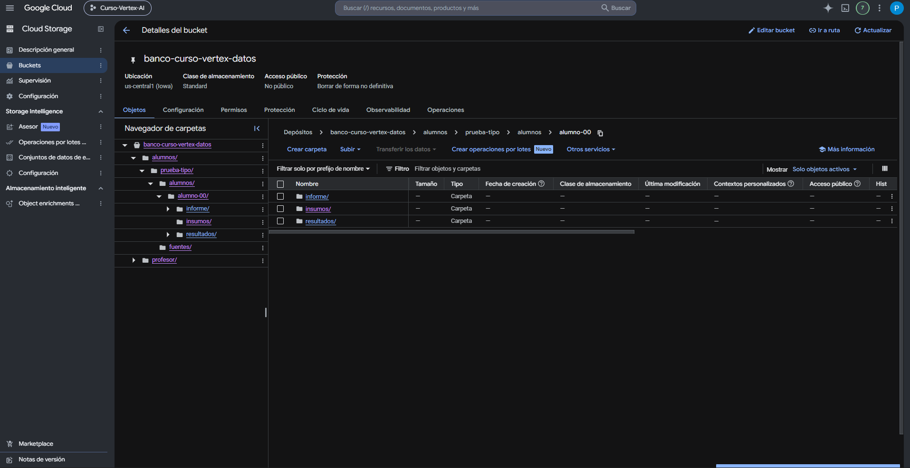
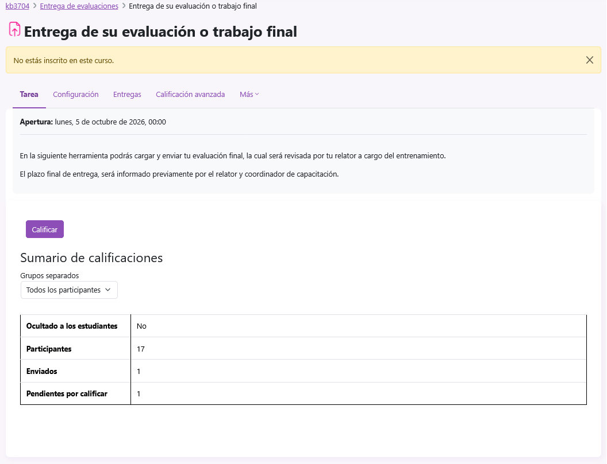
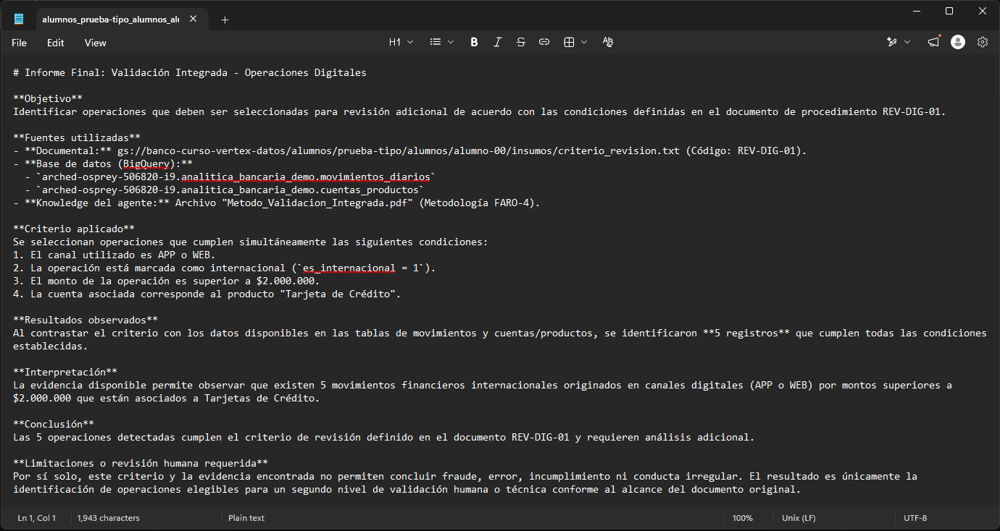
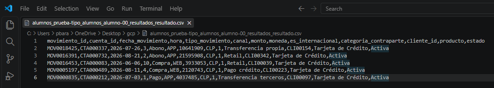

11. Entrega final
Antes de cerrar la evaluación, revisa que la fuente, la consulta, el resultado y el informe sean coherentes. Cuando todo esté correcto, descarga únicamente informe_final.md y súbelo a la plataforma de evaluación.
Objetivo del paso 11
Confirmar que tu carpeta contiene los entregables correctos, verificar que el resultado sea reproducible y descargar el archivo informe_final.md que se enviará en la plataforma del curso.
Estructura final esperada en Cloud Storage
gs://banco-curso-vertex-datos/alumnos/prueba-tipo/alumnos/alumno-XX/
├── insumos/
│ └── criterio_revision.txt
├── resultados/
│ ├── consulta.sql
│ └── resultado.csv
└── informe/
└── informe_final.md
Checklist de archivos
| Archivo | Debe existir | Debe contener |
|---|---|---|
| insumos/criterio_revision.txt | Sí | Conversión fiel del PDF oficial, sin resumen ni reinterpretación. |
| resultados/consulta.sql | Sí | La consulta exacta utilizada para obtener las operaciones seleccionadas. |
| resultados/resultado.csv | Sí | Encabezados y filas resultantes de la consulta ejecutada. |
| informe/informe_final.md | Sí | Informe final trazable, prudente y coherente con criterio y evidencia. |
Revisión final de consulta.sql
Comprueba visualmente que el SQL siga esta lógica:
| Control | Esperado |
|---|---|
| Tablas | movimientos_diarios + cuentas_productos. |
| JOIN | Por cuenta_id. |
| Canal | APP o WEB. |
| Internacional | es_internacional = 1. |
| Monto | monto > 2000000. |
| Producto | 'Tarjeta de Crédito'. |
| Filtros extra | Ninguno. |
| Agregaciones | Ninguna; se conserva el detalle de cada operación. |
Revisión final de resultado.csv
El archivo debe conservar las 13 columnas solicitadas, en este orden:
movimiento_id
cuenta_id
fecha_movimiento
hora
tipo_movimiento
canal
monto
moneda
es_internacional
categoria_contraparte
cliente_id
producto
estadoRevisión final de informe_final.md
Comprueba que el informe contenga las siete secciones del método:
- Objetivo
- Fuentes utilizadas
- Criterio aplicado
- Resultados observados
- Interpretación
- Conclusión
- Limitaciones o revisión humana requerida
La evidencia disponible muestra 5 operaciones que cumplen simultáneamente las condiciones del criterio de revisión definido. Estas operaciones requieren revisión adicional. Con las fuentes disponibles, este resultado no demuestra por sí solo fraude, error, incumplimiento ni conducta irregular.
Comprobaciones de verificación
Antes de entregar, deberías haber realizado dos comprobaciones independientes del resultado:
Verificación 1
Copiar consulta.sql en BigQuery, ejecutarla directamente y confirmar las 5 operaciones.
Verificación 2
Generar una consulta equivalente con Gemini en BigQuery y confirmar el mismo conjunto de operaciones.
Errores que debes corregir antes de entregar
| Problema | Acción |
|---|---|
| Falta uno de los cuatro archivos. | Completa el paso correspondiente antes de cerrar la evaluación. |
| El TXT resume el PDF. | Repite la conversión con el prompt validado y reemplaza únicamente tu archivo derivado. |
| El SQL devuelve más o menos de 5 operaciones. | Revisa JOIN, operadores y filtros contra el criterio. |
| El CSV no coincide con la consulta. | Vuelve a la evidencia de la ejecución; no edites filas manualmente para “hacerlo coincidir”. |
| El informe dice “fraude” o “incumplimiento” sin respaldo. | Corrige la interpretación para mantener el alcance real del criterio. |
| Los archivos están en otra carpeta. | Mueve o vuelve a generar los artefactos dentro de tu alumno-XX/. |
| No verificaste en BigQuery. | Completa los pasos 09 y 10 antes de entregar. |
Descargar el informe final
Cuando hayas terminado las verificaciones, vuelve a Cloud Storage y abre tu carpeta alumno-XX/informe/.
- Confirma que el archivo informe_final.md exista dentro de informe/.
- Descarga únicamente informe_final.md al computador.
- Antes de subirlo, abre el archivo y comprueba que corresponde a la versión final revisada.
Subir el informe a la plataforma de evaluación
Con informe_final.md descargado, entra a la plataforma de Kibernum y abre la sección de evaluación del curso.
- Entra a Entrega de evaluaciones.
- Abre Entrega de su evaluación o trabajo final.
- Adjunta el archivo informe_final.md.
- Completa el envío usando el botón disponible en tu vista de estudiante.
- Antes de cerrar la plataforma, confirma que la entrega haya quedado registrada.

Cierre de la evaluación
Checklist final
- criterio_revision.txt existe y es fiel al PDF.
- consulta.sql implementa exactamente las cuatro condiciones.
- resultado.csv contiene las 13 columnas y 5 operaciones de referencia.
- informe_final.md contiene las siete secciones requeridas.
- El agente realizó como máximo una ejecución analítica con execute_sql_readonly.
- La consulta guardada fue verificada manualmente en BigQuery.
- La consulta independiente de Gemini produce el mismo conjunto de operaciones.
- La conclusión no excede lo que las fuentes permiten afirmar.
- Confirmaste que la plataforma registró la entrega.
- Descargaste informe_final.md desde Cloud Storage.
- Subiste informe_final.md en “Entrega de su evaluación o trabajo final”.

